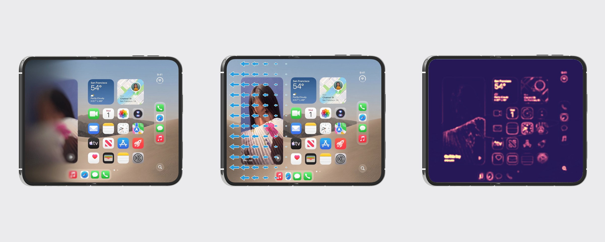

iphone-duo-transition
src/ ├── main.tsx router └── components/ ├── TracingPaperSimulation.tsx #tracing-paper │ └── tracingPaperScene.ts ├── CoordinatedPaperOpening.tsx #iphone-duo │ └── coordinatedDisplayScene.ts ├── PhonePerceptionExperiment.tsx #perception │ └── phonePerceptionScene.ts │ └── renderedOpticalFlow.ts ├── phoneFinish.ts shared └── labControls.css shared

#tracing-paper lifting paper off an image blurs it #iphone-duo the transition: stencil + paper blur #perception detail energy and optical flow, measured